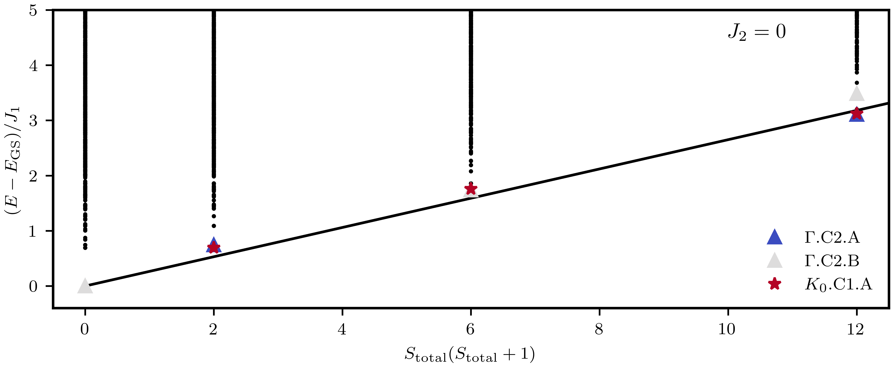

Tower of State \(J_1 - J_2\) Model in the Triangular Lattice
Author Rafael Soares
We perform a tower of states (TOS) analysis [1] of the \(J_1-J_2\) spin-\(\frac{1}{2}\) Heisenberg model on the triangular lattice [2]. This model consists of spin-\(\frac{1}{2}\) sites with nearest and next-nearest neighbor Heisenberg interactions,
The TOS analysis provides strong evidence for spontaneous symmetry breaking (SSB) in the thermodynamic limit, since the ground state of a finite system is completely symmetric. The \(J_1-J_2\) Heisenberg model on the triangular lattice can stabilize different types of order depending on the ratio \(J_2/J_1\), which break the continuous SU(2) spin rotation symmetry.
To perform the TOS analysis, we converged the lowest-lying eigenvalues using the Lanczos algorithm in each symmetry sector. We then determined the total spin quantum number, \(S_{\text{tot}}\), by inspecting, for each energy level, the number of degenerate eigenstates; thus, \(S_{\text{tot}}\) is given by the maximum \(S^z\). Finally, we plotted the energy spectra as a function of \(S_{\text{tot}}\left(S_{\text{tot}} + 1\right)\).

In the figure above, we show the energy spectra as a function of \(S_{\text{tot}}\left(S_{\text{tot}} + 1\right)\) for \(J_2=0\). In this case, the ground state exhibits a \(120^\circ\) Néel order. As described in [2], group representation theory can be used to predict the quantum numbers in the spontaneous symmetry breaking phases. In this cases, the multiplicities of irreducible representations in the Anderson tower of states can be obtained. This can then be confirmed by the exact diagonalization results the plotting script given above also plots the multiplicites for some sectors. We stress that the results presented are for \(N_{\text{spins}} = 18\) and, therefore, not all momenta in the first Brillouin zone can be resolved.
#include <xdiag/all.hpp>
using namespace xdiag;
int main() try {
std::vector<double> energies;
std::vector<std::string> IrrepList;
std::vector<int> Szsector;
int Nsites = 18;
int numbeig = 6; // number of Eigenvalues to converge.
std::vector<std::string> Irreps = {
"Gamma.C2.A", "Gamma.C2.B", "K0.C1.A", "K1.C1.A", "M.C2.A",
"M.C2.B", "X0.C1.A", "X1.C1.A", "X2.C1.A", "Z0.C1.A",
"Z1.C1.A", "0.C1.A", "1.C1.A", "2.C1.A"};
auto fl = FileToml("triangular.18.10418.J1J2.sublattices.tsl.toml");
OpSum ops = read_opsum(fl, "Interactions");
// For this ratio, we are in the 120 phase
ops["J1"] = 1.0;
ops["J2"] = 0.0;
for (auto irrep : Irreps) {
auto irrep2 = read_representation(fl, irrep, "Symmetries");
for (int nup = 0; nup <= Nsites; nup++) {
auto block = Spinhalf(Nsites, nup, irrep2);
auto res = eigvals_lanczos(ops, block, numbeig);
arma::vec eig0 = res.eigenvalues;
for (int i = 0; i < eig0.n_elem; i++) {
energies.push_back(eig0[i]);
IrrepList.push_back(irrep);
Szsector.push_back(nup);
}
}
}
// Construct the filename
std::string flstring = "energies_tower_of_states.triangular.Nsites." +
std::to_string(Nsites) + ".outfile.txt";
std::ofstream outfile(flstring);
for (int i = 0; i < energies.size(); i++) {
outfile << energies[i] << "," << Szsector[i] << "," << IrrepList[i] << "\n";
}
outfile.close();
return 0;
} catch (Error e) {
error_trace(e);
}
using XDiag
using Printf
using HDF5
function SpectrumSz()
energies = Vector{Float64}[] ## Collect the energies
IrrepList = Vector{String}[] ## Collect the energies
Nsites = 18
numbeig = 6 # number of lanczos vectors to converge
Irrep = []
fl = FileToml("triangular.18.10418.J1J2.sublattices.tsl.toml") #TOML file with Shastry-Sutherland Interactions
ops = read_opsum(fl, "Interactions")
# Define couplings
ops["J1"] = 1.0
ops["J2"] = 0.0 # For this ratio of couplings we are in the 120 phase.
Irreps = ["Gamma.C2.A", "Gamma.C2.B", "K0.C1.A", "K1.C1.A", "M.C2.A", "M.C2.B", "X0.C1.A","X1.C1.A","X2.C1.A", "Z0.C1.A","Z1.C1.A","0.C1.A","1.C1.A","2.C1.A"]
# Loop different Irreps
for j in Irreps
irrep = read_representation(fl, j)
# Loop different total magnetization sector:
for nup in 0:Nsites
block = Spinhalf(Nsites, nup, irrep)
r = eigvals_lanczos(ops, block, neigvals=numbeig)
eig = r.eigenvalues
for i in 1:length(eig)
push!(energies, [nup, eig[i]])
push!(IrrepList,[j])
end
end
end
filename = @sprintf("energies_tower_of_states.triangular.Nsites.%d.outfile.h5", Nsites)
h5open(filename, "w") do file
write(file, "energies", hcat(energies...))
write(file, "irrep", hcat(IrrepList...))
end
end
SpectrumSz()
Plotting Script
using HDF5, CairoMakie
# === Load Data ===
# Open the HDF5 file and read datasets "energies" and "irrep"
data18 = h5open("energies_tower_of_states.triangular.Nsites.18.outfile.h5", "r")
AllEnergies = read(data18["energies"])
Allirreps = read(data18["irrep"])[1,:]
close(data18)
# === Function Definitions ===
# Computes total spin values given energies and irreps.
function get_STotal(energies, irreps, Nspins)
# In Julia the columns are 1-indexed; here column 2 corresponds to Python’s energies[:,1]
energies2 = round.(energies[2, :], digits=8)
E0 = unique(energies2)
sort!(E0)
Stot = similar(E0)
Irreps_arr = Vector{Any}(undef, length(E0))
for (i, e0) in enumerate(E0)
mask = findall(x -> x == e0, energies2)
# Column 1 of energies corresponds to Python’s energies[:,0]
Sz = energies[1, mask] .- Nspins / 2
vals = Sz .* (Sz .+ 1)
max_val, arg = findmax(vals)
Stot[i] =abs(max_val)
# Get the corresponding irreps element.
Irreps_arr[i] = irreps[mask][arg]
end
return Stot, E0, Irreps_arr
end
# Extracts lower energy levels for a specified irreducible representation.
function get_lower(Stotal, sortedEnergies, allenergies, IrrepList, IrreListAll, irr)
target = irr[1]
maskAll = findall(x -> x == target, IrreListAll)
mask = findall(x -> x == target, IrrepList)
energies2 = round.(allenergies[2, maskAll], digits=8)
St = round.(Stotal, digits=0)
# Consider only the entries corresponding to the target irreducible rep.
St_mask = St[mask]
St2 = sort(unique(St_mask))
E2 = sortedEnergies[mask]
Ef = zeros(length(St2), 2)
for (i, s) in enumerate(St2)
mask2 = findall(x -> x == s, St_mask)
E_subset = E2[mask2]
Ef[i, 1] = minimum(E_subset)
multiplicity = findall(x -> x == Ef[i, 1], energies2)
Ef[i, 2] = length(multiplicity)
end
return St2, Ef
end
function make_Plot()
# --- Compute Quantities ---
Nspins = 18
Stot, SEtot, SortedIr = get_STotal(AllEnergies, Allirreps,Nspins)
SGamma, EGamma = get_lower(Stot, SEtot, AllEnergies, SortedIr, Allirreps, ["Gamma.C2.A"])
SGammaB, EGammaB = get_lower(Stot, SEtot, AllEnergies, SortedIr, Allirreps, ["Gamma.C2.B"])
SGammaK, EGammaK = get_lower(Stot, SEtot, AllEnergies, SortedIr, Allirreps, ["K0.C1.A"])
# === Plotting ===
fig = Figure(ratio=1.618)
ax = Axis(fig[1, 1],
xlabel=L"S_{\text{total}}(S_{\text{ total}}+1)",
ylabel=L"$(E - E_{\text{GS} })/J_1$" )
xlims!(ax, -0.5, 12.5),
ylims!(ax, -0.4, 5)
# Plot the reference line: Stot vs. 0.265*Stot
lines!(ax, Stot, 0.265 .* Stot, color=:black)
Egs = minimum(SEtot)
# Plot all energies shifted by the ground state energy.
scatter!(ax, Stot, SEtot .- Egs, color=:black, markersize=4)
maskA = [2, 4]
print(SGamma)
scatter!(ax, SGamma[maskA], EGamma[maskA, 1] .- Egs,
marker=:utriangle, markersize=10,
label=L"$\Gamma.\mathrm{C2.A}$")
@info "Multiplicity for Gamma.C2.A: $(EGamma[maskA, 2])"
maskB = [1, 3, 4]
scatter!(ax, SGammaB[maskB], EGammaB[maskB, 1] .- Egs,
marker=:utriangle, markersize=10,
label=L"$\Gamma.\mathrm{C2.B}$")
@info "Multiplicity for Gamma.C2.B: $(EGammaB[maskB, 2])"
maskC = [2, 3, 4]
scatter!(ax, SGammaK[maskC], EGammaK[maskC, 1] .- Egs,
marker=:star5, markersize=10,
label=L"$K_0.\mathrm{C1.A}$")
@info "Multiplicity for K0.C1.A: $(EGammaK[maskC, 2])"
text!(ax, L"J_2=0", position=(10, 4.5), align=(:left, :center))
axislegend(ax; framevisible=true, position=:rb, labelsize=15)
display(fig)
return nothing
end
make_Plot()
references
[1] P. W. Anderson, An Approximate Quantum Theory of the Antiferromagnetic Ground State, Phys. Rev. 86, 694 (1952)
[3] Alexander Wietek, Michael Schuler and Andreas M. Läuchli, Studying Continuous Symmetry Breaking using Energy Level Spectroscopy, arXiv:1704.08622 (2017).